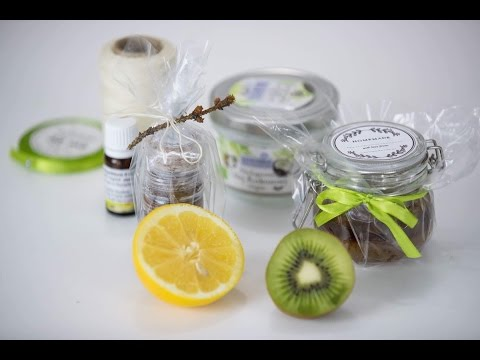

Plantany - trzy proste i pyszne przepisy - Krok do Zdrowia
 Menu Zdrowie Wszystkie Zdrowie Anatomia i fizjologia Choroby Ciało ludzkie Kuracje i leczenie Lekarstwa Naturalne remedia Wszystkie Naturalne remedia Dbanie o ciało Dbanie o włosy Inne formy leczenia Naturalne kuracje Naturopatia Pielęgnacja twarzy Rośliny lecznicze Dobre samopoczucie Wszystkie Dobre samopoczucie Ćwiczenia i sport Uroda i Pielęgnacja Zdrowy styl życia Zdrowy umysł Dieta Wszystkie Dieta Dieta śródziemnomorska Diety detox Odżywianie Schudnij Zdrowa dieta Żywność ekologiczna i transgeniczna Przepisy Wszystkie Przepisy Dania wegetariańskie i wegańskie Desery Napary Przystawki i dania główne Soki i koktajle Zdrowe przepisy Żywność bezglutenowa Macierzyństwo Wszystkie Macierzyństwo Ciąża Dzieci Para Wszystkie Para Konflikty Seks Zdrowie i życie seksualne Zerwanie i rozwód Związki Styl życia Wszystkie Styl życia Ciekawostki Dekoracja Ogród i przestrzeń zewnętrzna Recykling Wskazówki dla domu Kim jesteśmy • Polityka Cookies • Zasady i warunki użytkowania • Polityka Prywatności Zdrowie Anatomia i fizjologia Choroby Ciało ludzkie Kuracje i leczenie Lekarstwa Naturalne remedia Dbanie o ciało Dbanie o włosy Inne formy leczenia Naturalne kuracje Naturopatia Pielęgnacja twarzy Rośliny lecznicze Dobre samopoczucie Ćwiczenia i sport Uroda i Pielęgnacja Zdrowy styl życia Zdrowy umysł Dieta Dieta śródziemnomorska Diety detox Odżywianie Schudnij Zdrowa dieta Żywność ekologiczna i transgeniczna Przepisy Dania wegetariańskie i wegańskie Desery Napary Przystawki i dania główne Soki i koktajle Zdrowe przepisy Żywność bezglutenowa Macierzyństwo Ciąża Dzieci Para Konflikty Seks Zdrowie i życie seksualne Zerwanie i rozwód Związki Styl życia Ciekawostki Dekoracja Ogród i przestrzeń zewnętrzna Recykling Wskazówki dla domu Home » Przepisy
Plantany - trzy proste i pyszne przepisy
22 Czerwiec, 2019 Poznaj oryginalne przepisy na plantany! Jak zrobić ciasto gruszkowe bez cukru? 2 przepisy na naleśniki białkowe, które napełnią Cię energią Kimchi - jak wykonać ten najzdrowszy superprodukt?Plantany to absolutna podstawa kilku najsławniejszych tradycyjnych kuchni świata. Te pyszne owoce zyskały sobie szczególną popularność w Ameryce Południowej, skąd pochodzi kilka najbardziej oryginalnych i smacznych przepisów.
Plantany są proste w obróbce, dzięki czemu możesz przygotować ciekawe i zaskakujące danie szybko i niemal bez wysiłku. Zanim jednak podzielimy się z Tobą przepisami, pozwól nam opowiedzieć nieco o korzyściach płynących z jedzenia platanów.
Jak być może wiesz, te owoce są doskonałym źródłem potasu i kwasu foliowego. Dodatkowo zawierają sporo witamin i składników mineralnych, takich jak cynk czy selen.
A teraz sprawdźmy, jak je przygotować!
Oryginalne wskazówki, które pozwolą Ci przygotować pyszne plantany
1. Pieczone plantany
Jeśli jesteś osobą, która woli słodycze niż słone przekąski , jesteś we właściwym miejscu. Ten przepis z pewnością przypadnie Ci do gustu.
Składniki
4 dojrzałe plantany (850 g) 5 arkuszy folii aluminiowej 3 łyżki niesolonej margaryny (45 g) 2 szklanki startego białego sera (300 g) 1/2 łyżki oleju roślinnego (8 ml)Przygotowanie
Przed rozpoczęciem należy usunąć skórę z plantanów i umieścić je w formie, w całości. Następnie ustaw temperaturę piekarnika na 200° C. Przed włożeniem formy z plantanami do piekarnika, należy poczekać około 5 minut, aż piekarnik się nagrzeje. Posmaruj owoce margaryną zmieszaną z olejem. To sprawi, że podczas pieczenia nabiorą złocistej barwy, a w środku będą odpowiednio miękkie. Na koniec piecz plantany w piekarniku przez 35 minut. Powinieneś je obracać co siedem minut, żeby równo się upiekły. Kiedy danie będzie gotowe, nakryj do stołu i ciesz się jego wspaniałym smakiem!Przeczytaj również: Dwa banany dziennie – 7 korzyści dla zdrowia
2. Tostony z zielonych plantanów
Ten przepis jest bardzo często przygotowywany w krajach Ameryki Łacińskiej, zwłaszcza w Wenezueli, Kolumbii, Ekwadorze, Peru i Brazylii. Do jego przygotowania będziesz potrzebować niedojrzałych zielonych plantanów, soli oraz oleju roślinnego.
Tostony są zwykle dodatkiem do dania głównego. Doskonale smakują z rybami oraz mięsem, ale świetnie uzupełniają również smak sałatek czy puree ziemniaczanego.
Najważniejsza w tym przepisie jest prostota jego przygotowania. Do dzieła!
Składniki
1 szklanka oleju roślinnego (110 ml) 2 duże zielone plantany (400 g) 2 łyżki soli (30 g)Przygotowanie
Wlej szklankę oleju na patelnię i podgrzewaj na średnim ogniu. Usuń skórkę z zielonych plantanów. Pamiętaj, że podczas usuwania skóry musisz uważać, żeby nie dotknąć dłońmi ubrania, ponieważ możesz je poplamić. Najlepiej, jeśli założysz fartuch. Następnie pokrój plantany. Gdy olej będzie wystarczająco gorący, ułóż na patelni plasterki plantanów i smaż do lekkiego zbrązowienia. Kiedy owoce nabiorą złocistego odcienia, przełóż je na talerz. Za pomocą tłuczka do mięsa rozbij plasterki plantanów. Postaraj się, żeby placuszki były w miarę cienkie. Następnie umieść je z powrotem na oleju na małym ogniu i smaż po minucie z każdej strony. Odsącz placuszki z nadmiaru oleju i podawaj lekko posolone.Przeczytaj również: Dojrzałe banany – Jak wpływają na zdrowie?
3. Słodkie dojrzałe plantany
To danie jest tak smaczne, jak wskazuje na to tytuł. Jego przygotowanie to zatem idealny sposób na rozkoszowanie się smakiem plantanów. Poniższy przepis po mistrzowsku łączy w sobie słodycz plantanów i trzcinowego cukru .
Kontrastujące ze słodyczą nuty czerwonego wina sprawiają, że słodkie plantany stają się rozkoszą dla podniebienia.
Składniki
4 duże dojrzałe plantany (700 g) 1 szklanka brązowego cukru (100 g) 1/2 szklanki oleju roślinnego (60 ml) 1 szklanka czerwonego wina (110 ml)Przygotowanie
Zacznij od usunięcia skórki z plantanów i pokrojenia ich na plastry o szerokości około 2 cm. Następnie dobrze je podsmaż. Usmażone plantany przełóż do ognioodpornej miski. Następnie dodaj brązowy cukier i kubek wina do naczynia z plantanami. Na koniec przełóż wszystko na patelnię i pozwól plantanom gotować się przez 20 minut. Podawaj i dopraw do smaku. Rozkoszuj się tym wyśmienitym daniem! Banany i plantany – 3 różnice w wartości odżywczej Banany i plantany to nie to samo. I nie chodzi wyłącznie o różnicę w ich konsystencji i smaku, ale również tą dotyczącą wartości odżywczych. Przeczytaj więcej » BibliografiaSingh, B., Singh, J. P., Kaur, A., & Singh, N. (2016). Bioactive compounds in banana and their associated health benefits – A review. Food Chemistry . https://doi.org/10.1016/j.foodchem.2016.03.033
Fahrasmane, L., Parfait, B., & Aurore, G. (2014). Bananas, a source of compounds with health properties. In Acta Horticulturae . https://doi.org/10.17660/ActaHortic.2014.1040.9
Vu, H. T., Scarlett, C. J., & Vuong, Q. V. (2018). Phenolic compounds within banana peel and their potential uses: A review. Journal of Functional Foods . https://doi.org/10.1016/j.jff.2017.11.006
Link copied! INTERESUJĄCE ARTYKUŁY Desery Jak zrobić ciasto gruszkowe bez cukru?Ciasto gruszkowe bez cukru to pyszny, niedrogi i bardzo prosty w wykonaniu deser. Ponadto jest to doskonała alternatywa dla dzieci,…
Zdrowe przepisy 2 przepisy na naleśniki białkowe, które napełnią Cię energiąNaleśniki białkowe są łatwe do zrobienia. Ponadto z łatwością łączą się z innymi produktami, aby przygotować zdrowe i zbilansowane śniadanie…
Przepisy Kimchi - jak wykonać ten najzdrowszy superprodukt?Czy wiesz jak przygotować domowe kimchi? Co zawiera ta tajemnicza koreańska receptura? Ta znana z azjatyckich restauracji przystawka, to interesująca…
Desery Bezglutenowe gorące ciastka bananowe z dwoma składnikamiCzy możesz sobie wyobrazić pyszny deser z tylko dwóch składników? Co by było, gdyby dodatkowo te składniki były łatwe do…
Desery Ciasto kawowe z jagodami, ale bez cukruTo pozbawione cukru ciasto kawowe z jagodami stanowi idealny wręcz deser na rodzinne spotkania lub przyjęcia z przyjaciółmi, ponieważ jest…
Zdrowe przepisy Batony energetyczne własnej roboty - 3 przepisy!Batony energetyczne to zdrowa opcja dla tych, którzy chcą dostarczyć dawki energii do swojego organizmu. Jednak większość dostępnych w handlu…
Ciekawe artykuły Choroby Wrzód miękki: objawy i leczenieWrzód miękki to choroba zakaźna wywoływana przez bakterie. Główne sposoby ochrony przed jego rozwojem to używanie prezerwatyw i zmniejszenie liczby…
Anatomia i fizjologia Na czym polega technika autopsji neuropatologicznej?Technika autopsji neuropatologicznej składa się z dwóch głównych faz. Pierwsza z nich to autopsja czaszki, zaś druga to autopsja kręgowa.…
Desery Jak zrobić ciasto gruszkowe bez cukru?Ciasto gruszkowe bez cukru to pyszny, niedrogi i bardzo prosty w wykonaniu deser. Ponadto jest to doskonała alternatywa dla dzieci,…
Choroby Celiakia lub nietolerancja glutenu - wszystko, co należy wiedzieć na ten tematCeliakia lub inaczej nietolerancja glutenu to przewlekła nadwrażliwość na białko w niektórych produktach spożywczych, takich jak zboża. Eksperci szacują, że…
Kim jesteśmy Polityka Cookies Zasady i warunki użytkowania Polityka Prywatności© 2020 Krok do Zdrowia | Blog poświęcony zdrowemu stylowi życia.
International: Français | Suomi | Dansk | Deutsch | Română | Nederlands | العربية | Ελληνικά | Español | Português | 日本語 | Українська | Türkçe | Svenska | 한국어 | Русский | 繁體中文 | English | हिन्दी | Norsk bokmål | Italiano | Български
Zawartość niniejszej strony jest publikowana jedynie w celach informacyjnych. W żadnym wypadku treści strony nie można traktować jako alternatywy dla pracy profesjonalisty. Z tego powodu zalecamy Ci abyś w razie potrzeby skontaktował się ze specjalistą.
Ostatnia aktualizacja: 03 Wrzesień, 2020